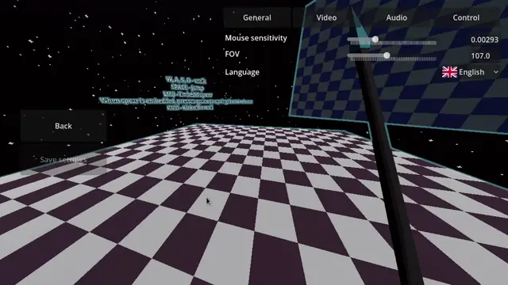

My friend put an idea in my head to make a "rage game" (theres porbably a better name for the genre), similiar to stuff like Getting Over It. The appeal of this idea was about allowing me to focus on a singular movement mechanic while avoiding a lot of complex stuff (checkpoints, cutscenes, drawing, 3d, animations) that comes with more serious projects.
Originally planned as a 2-day-journey, the project quickly became the defenition of getting carried away. The spear bending mechanic was a lot of fun to figure out, and the perfectionistic pull to "do it properly" stretched the project to several weeks.
Such hyperfocused aproach led to several problems that could have easily been avoided by having an outside perspective on my work. I dont regret the time I put into this project as the mistakes I made led me to learn valuable lessons.
Theres is a playable release available on github, although it only has a small test level.
